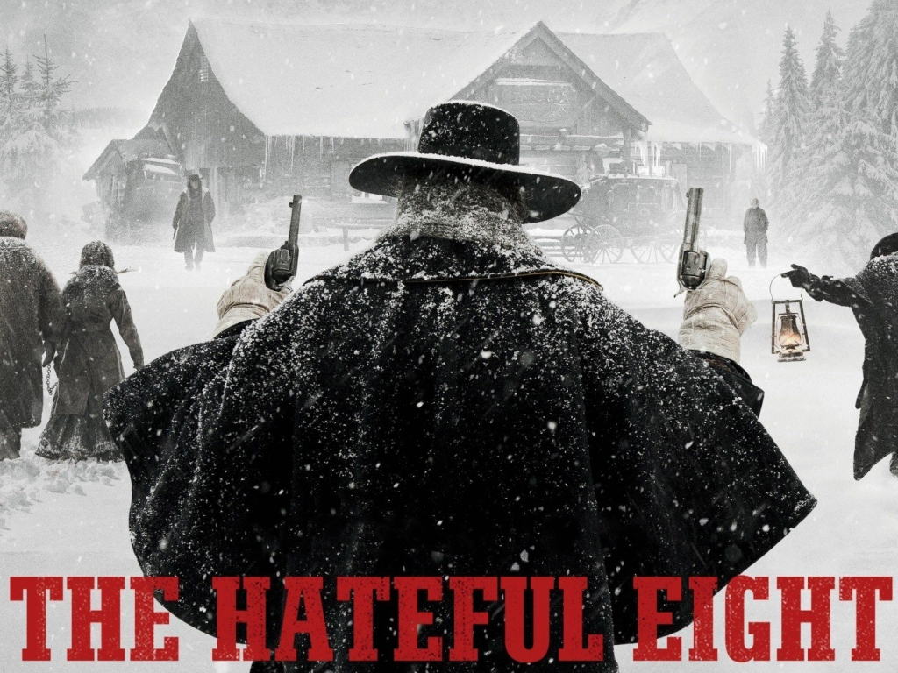

Cuando ostentas el título a actor con más películas de Hollywood, es normal que un cineasta tan personal como Tarantino quiera contar contigo para sus proyectos. Jackson ha estado con el de Knoxville desde antes de que Pulp Fiction le catapultase al estrellato, ya que participó en Amor a quemarropa en 1993. Desde entonces ha salido en todas sus películas salvo en Death Proof y Four Rooms.
Si hay alguna actriz que pueda considerarse fetiche de Tarantino, esa es sin duda Uma Thurman. Tras sorprender a todo el mundo con su interpretación en Pulp Fiction, el director la escogió para protagonizar Kill Bill. Pero tras herirse en un accidente en una escena que Tarantino se empeñó en que grabase sin especialista, no han vuelto a colaborar. Aunque la actriz ha dicho que en un futuro volverá a trabajar con él.
El actor británico también ha participado en diversas películas de Tarantino, concretamente en tres: «Reservoir Dogs» (1992) en la que interpretada a un joven policía infiltrado, «Pulp Fiction» (1994), en la que da vida a Ringo, el atracador repentino de cafeterías y «Four Rooms» (1995), en la que aparece como un botones llamado Ted.
El actor austriaco Christoph Waltz ha trabajado en dos películas de Tarantino. Mientras en «Malditos Bastardos» (2009) interpreta al coronel nazi Hans Landa, en «Django Desencadenado» (2012) da vida al dentista y cazador de recompensas King Schultz. En ambas películas consiguió el Óscar al Mejor Actor de Reparto.